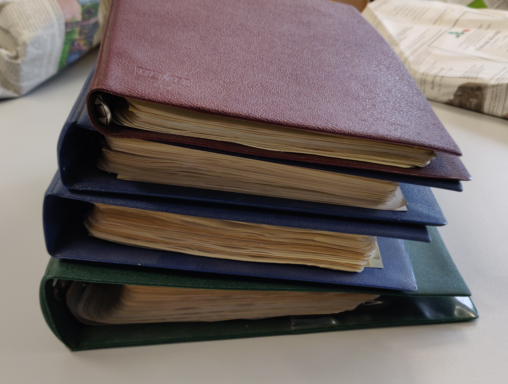
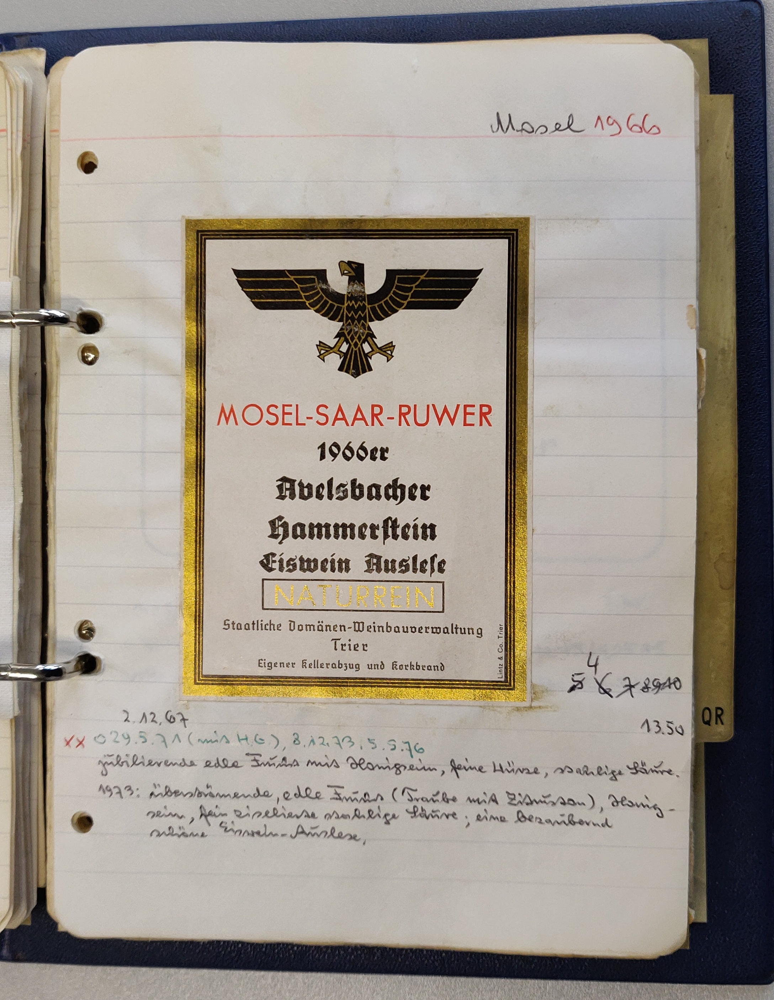

<!doctype html>
<html>
	<head>
		<meta charset="utf-8">
		<meta name="viewport" content="width=device-width, initial-scale=1.0, maximum-scale=1.0, user-scalable=no">

		<title>Weinetiketten (Blockseminar)</title>

		<link rel="stylesheet" href="dist/reset.css">
		<link rel="stylesheet" href="dist/reveal.css">
		<link rel="stylesheet" href="dist/theme/simple.css">

		<!-- Theme used for syntax highlighted code -->
		<link rel="stylesheet" href="plugin/highlight/monokai.css">
	</head>
	<body>
		<div class="reveal">
			<div class="slides">

<section data-markdown=""
         data-separator="^\n--\n" 
         data-separator-vertical="^\n---\n" 
         data-separator-notes="^::" 
         data-charset="utf-8" 
         data-background-image="img/basics/uni-trier_icon.jpg" 
         data-background-size="80px" 
         data-background-position="right 10px top 10px">

<script type="text/template">
<!-- ============ BEGINNING OF SLIDE CONTENT =========== -->
<br/>

### Weinetiketten im Wandel<br/>(Blockseminar)
<br/>
<hr/>
<br/>Sitzung am 22. Jan. 2022
<br/>Prof. Dr. Christof Schöch
<hr/>
<br/>Wintersemester 2021/2022
<br/>
<hr/>


--
## Ziele der Sitzung und Ablaufplan

---
### Kontext: Weinetiketten im Wandel
<a href="https://tcdh.uni-trier.de/de/projekt/weinetiketten-im-wandel"></a>

---
### Ziele 
* Konkreten Einblick gewinnen in die Erschließung von Weinetiketten-Sammlungen
* Verständnis entwickeln für die Prinzipien und Details der digitalen Erschließung von Weinetiketten
* Praktische Erfahrung sammeln bei der Kodierung von Etiketten in XML
* Ideen für die Verbesserung des Vorgehens sammeln und ggfs. umsetzen
* Ideen für die weitere Nutzung der Informationen entwickeln


---
### Bitte sammeln Sie laufend Notizen zu den folgenden Fragen
* Welche Phänomene würden Sie gerne festhalten, es gibt aber keinen Mechanismus dafür?
* Welche (inhaltliche oder technische) Schwierigkeiten tauchen bei der Kodierung auf?
* Welche Analyseperspektive würde Sie interessieren? 


---
### Ablaufplan
<small>

| Zeit    | Format    |  Thema                                            |
|:--------|:---------:|:--------------------------------------------------|
| 9h00    | Input     | Begrüßung und Sitzungsüberblick                   |
| 9h15    | Tandems   | [Berichte aus den Gruppen](#/2)                   |
| 10h00   | Input     | [Zum Einstieg: Sammlungen und ein Beispiel](#/3)  |
| 10h30   | ---       | Pause                                             |
| 10h50   | Input     | [Grundlagen von XML inkl. Validierung](#/4)       |
| 12h00   | Gemeinsam | [Software-Installation](#/5)                      |
| 12h30   | ---       | Pause                                             |
| 13h30   | Input     | [Ein Datenmodell für Weinetiketten](#/6)          |
| 14h15   | Tandems   | [Praxis: Kodierung von Etiketten](#/7)            |
| 15h15   | ---       | Pause                                             |
| 15h45   | Gemeinsam | [Ergebnisse der Kodierung](#/7)                   |
| 16h30   | Gemeinsam | [Abschlussdiskussion](#/10)                       |

</small>


--
## Berichte aus den Gruppen (cont'd)
<br/>[↤](#/1/4)
<br/>

* Jedes Tandem berichtet von der Etikettenanalyse


--
## Zum Einstieg: Sammlungen und Beispielkodierung
<br/>[↤](#/1/4)


---
### Was ist Gegenstand der Forschung? 
1. Digitalisierung ~ Erschließung ~ Analyse
1. Etikettensammlung oder Einzeletiketten
1. Etikett ~ Etikettengruppe ~ etikettierte Flasche
1. Vorhandene Sammlung vs. Sammlungsaufbau
1. Erschließung: Datenmodell und Kodierungspraxis


---
### Sammlung Mosel-Saar-Ruwer

<a href="img/SMW_Ordner-1.jpg"></a>
<a href="img/SMW_Ordner-2.jpg"></a>
<br/>
<a href="img/mwa-Piesport_0001.jpg"></a>
<a href="img/mwa-Piesport_0002.jpg"></a>
<a href="img/mwa-Piesport_0003.jpg"></a>
<br/>
<a href="img/mwa-Piesport_0004.jpg"></a>
<a href="img/mwa-Piesport_0005.jpg"></a>
<a href="img/mwa-Piesport_0006.jpg"></a>
<br/>
<a href="img/mwa-Piesport_0007.jpg"></a>
<a href="img/mwa-Piesport_0008.jpg"></a>
<a href="img/mwa-Piesport_0009.jpg"></a>


---
### Sammlung Mosel 1960er-1970er
<a href="img/Weinetiketten-CM_13.jpg"></a>
<a href="img/Weinetiketten-CM_14.jpg"></a>
<a href="img/Weinetiketten-CM_08.jpg"></a>
<a href="img/Weinetiketten-CM_12.jpg"></a>
<br/>
<a href="img/Weinetiketten-CM_03.jpg"></a>
<a href="img/Weinetiketten-CM_04.jpg"></a>
<a href="img/Weinetiketten-CM_05.jpg"></a>
<a href="img/Weinetiketten-CM_06.jpg"></a>
<br/>
<a href="img/Weinetiketten-CM_02.jpg"></a>
<a href="img/Weinetiketten-CM_09.jpg"></a>
<a href="img/Weinetiketten-CM_10.jpg"></a>
<a href="img/Weinetiketten-CM_11.jpg"></a>


---
### Sammlung MSR (CS)
<a href="img/MSR-0001_Zell_0600x.jpg"></a>
<a href="img/MSR-0002_Wiltingen_1200x.jpeg"></a>
<a href="img/MSR-0005_Piesport_0600x.jpg"></a>
<a href="img/MSR-0006_Zell_0600x.jpg"></a>
<a href="img/MSR-0008_Ürzig_0600x.jpg"></a>
<br/>
<a href="img/MSR-0009_Berncastel.jpg"></a>
<a href="img/MSR-0012.jpg"></a>
<a href="img/MSR-0013.jpg"></a>
<a href="img/MSR-0014.jpg"></a>
<a href="img/MSR-0015.jpg"></a>
<br/>
<a href="img/MSR-0016.jpg"></a>
<a href="img/MSR-0017.jpg"></a>
<a href="img/MSR-0018.jpg"></a>
<a href="img/MSR-0020.jpg"></a>
<a href="img/MSR-0021.jpg"></a>


---
### Ein Kodierungsbeispiel zum Einstieg
<a href="img/MSR-0002_Wiltingen_1200x.jpeg"></a>
<br/>

* Bildatei (Wiltinger, 1939): https://raw.githubusercontent.com/dh-trier/wlv/master/msr/img/MSR-0002_Wiltingen_1200x.jpeg 
* Kodierung in XML: https://raw.githubusercontent.com/dh-trier/wlv/master/msr/xml/MSR-0002_Wiltingen.xml


--
## Grundlagen von XML 
<br/>[↤](#/1/4)


---
### Externe Folien 
* "Textauszeichnung mit XML" (Auszeichnungssprachen):<br/>https://github.com/dh-trier/Auszeichnungssprachen/raw/main/pdf/Markup-E04-Textauszeichnung.pdf
* "Validieren von XML-Dokumenten" (Auszeichnungssprachen):<br/>https://github.com/dh-trier/Auszeichnungssprachen/raw/main/pdf/Markup-E05_Validierung1.pdf


---
### Literaturhinweise
Einstieg
* Georg Vogeler und Patrick Sahle: „XML“, in: Digital Humanities: Eine Einführung, hg. von Fotis Jannidis, Hubertus Kohle und Malte Rehbein. Stuttgart: Metzler, 2017, 128-146.

Weitere Empfehlungen zur Vertiefung
* Vonhoegen, Helmut. Handbuch: Einstieg in XML. Grundlagen, Praxis, Referenz. Bonn, 2015.
* David Hunter et al.: "Part II - Validation" (insbesondere: Kapitel 7: Relax NG") in: *Beginning XML*, 4th edition. Wiley, 2007. 
* Eric van der Vlist. *Relax NG*. O'Reilly Media, 2003. http://books.xmlschemata.org/relaxng/


--
## Software-Installation:<br/>Visual Studio Code
<br/>[↤](#/1/4)


---
### Download-Links 
* VSC Download-Seite: https://code.visualstudio.com/download
* Hinweise zu Extensions: https://code.visualstudio.com/docs/editor/extension-marketplace
* Installation von 'Scholarly XML': https://marketplace.visualstudio.com/items?itemName=raffazizzi.sxml
* Ein kodiertes Etikett (Wiltingen): https://raw.githubusercontent.com/dh-trier/wlv/master/msr/xml/MSR-0002_Wiltingen.xml
* Die WLV Schema-Datei (RNG): https://github.com/dh-trier/wlv/blob/master/schemas/wlv-label-schema.rng

---
### Validierung Testen 
* Die Datei "MSR-0002-Wiltingen.xml" 
* Im gleichen Ordner: Die Datei "wlv-label-schema.rng"
* In der Label-Datei den Pfad in der zweiten Zeile anpassen: `href="wlv-label-schema.rng"`


--
## Ein Datenmodell für Weinetiketten
<br/>[↤](#/1/4)

---
### Überblick
1. Was ist Datenmodellierung?
1. Warum ein Datenmodell? 
1. Konzeptuelle Ebene
1. Dokumentation
1. Schema-Datei


---
### Was ist Datenmodellierung? 
* Recherche- / Brainstorming-Phase
* Sammeln im Cryptpad (Link: siehe Wiki in StudIP und im Chat)
* Siehe auch: [Datenmodellierung 1](https://dh-trier.github.io/dh-vorlesung/reveal/DH-E04_Datenmodellieren-1.html#/) (Einführung in die DH)

---
### Warum ein Datenmodell?
* Konzeptuell: 
  * Dokumentiert unser Verständnis der Struktur und Semantik des Gegenstands
  * Leistet Abstraktion, Identifikation, Explizierung, Definition, Beziehungen
  * Befördert die progressiv genauere Erkenntnis des Gegenstands ("residue of uniqueness")
* Technisch: 
  * Erleichtert die Kodierung durch Vorschläge für Elemente, Attribute und Werte
  * Stellt dadurch die einheitliche Erschließung der Etiketten sicher
  * Ermöglicht die automatische Weiterverarbeitung der Informationen

---
### Das "Wine Label Vocabulary"
<a href="img/WLV-Datenmodell-Übersicht.png"></a>


---
### Dokumentation und Schema
* Dokumentation der Elemente und Attribute:<br/>https://github.com/dh-trier/wlv/blob/master/schemas/wlv-label-docs.md
* Schema: https://github.com/dh-trier/wlv/tree/master/schemas (RNG)


--
## Praxis (in Tandems):<br/>Kodierung eines Weinetiketts
<br/>[↤](#/1/4)

---
### Quellen für Etiketten 
* Trierer Sammlung: Download im Datei-Ordner in StudIP
* Weinetikettensammler.de: https://weinetikettensammler.de/index.php?show=etikettenSchau (Mosel)
* (Sie können die Etiketten, die Sie analysiert hatten, auch für die Kodierung verwenden)


---
### Start-Code

```

<?xml version="1.0" encoding="UTF-8"?>
<?xml-model href="wlv-label-schema.rng" type="application/xml" schematypens="http://relaxng.org/ns/structure/1.0"?>
<wlv labelID="XXXX">
  <metadata>
  </metadata>
  <label>
  </label>
</wlv>

```

* Dazu: [Dokumentation](https://github.com/dh-trier/wlv/blob/master/schemas/wlv-label-docs.md)


--
## Normdaten für die Kodierung 
<br/>[↤](#/1/4)


---
### Einstieg: Recherche "Was sind Normdaten"?

---
### Was sind Normdaten? 
* Normdaten werden von Bibliotheken oder anderen Infrastrukturen angeboten
* Normdaten definieren und identifizieren Entitäten
* Klassiker: die Gemeinsame Normdatendatei der DNB (Autoren, Werke, Sachthemen), siehe: <br/>https://www.dnb.de/DE/Professionell/Standardisierung/GND/gnd.html

---
### Wozu dienen Normdaten? 
* Disambiguierung von Strings in Quellen
* Eindeutige Identifikation von Entitäten
* Algorithmische Auffinden weiterer Informationen
* Vernetzung der Daten in der Linked Open Data Cloud

---
### Welche Normdaten sind relevant? 
1. Ortsnamen: Identifier (und Geokoordinaten), bspw.: Wikidata, Getty Thesaurus
1. Unternehmen: Identifier (und Ort), bspw.: Wikidata
1. Weinlagen: Identifier (und Ort), bspw.: Lagenliste, Wikidata 
1. Bildelemente: Identifier, bspw. Wikidata, ICONCLASS


---
### Zudem: Vorgaben des Weinrechts
* Bedeutung für die Etiketten
  * Bestimmte Informationen sind verpflichtend: siehe [Merkblatt Weinetikettierung](http://www.untersuchungsaemter-bw.de/pdf/merkblatt_weinetikettierung.pdf) und [Wikipedia](https://de.wikipedia.org/wiki/Weinbau_in_Deutschland#Vorgeschriebene_Angaben)
  * Bestimmte Begriffe sind gesetzlich definiert:<br/>[Anbaugebiete](https://www.gesetze-im-internet.de/weing_1994/__3.html), [Qualitätsniveaus](https://www.deutscheweine.de/wissen/qualitaetsstandards/neuregelungen-im-deutschen-weinrecht/), [Begriffsbestimmungen](https://www.gesetze-im-internet.de/weing_1994/__2.html), [Rebsorten](https://www.ble.de/DE/Themen/Landwirtschaft/Wein/Liste-Rebsorten/Rebsorten_node.html)
* Rechtliche Grundlagen
  * u.a. Weingesetz (1994): https://www.gesetze-im-internet.de/weing_1994/index.html
  * Hinweise zur Novellierung 2021: https://www.deutscheweine.de/wissen/qualitaetsstandards/neuregelungen-im-deutschen-weinrecht/


---
### Quellen für Normdaten
* Die Schema-Datei enthält Normdaten für bildlich dargestellte Gegenstände
* Wikidata, bspw. für Orte oder Organisationen: https://www.wikidata.org/
* Getty Thesaurus of Geographic Names: https://www.getty.edu/research/tools/vocabularies/tgn/
* Lagenliste Rheinland-Pfalz: https://github.com/dh-trier/wlv/blob/master/schemas/lagenliste.tsv


--
## Hinzufügen von Normdaten<br/>(in Tandems)
<br/>[↤](#/1/4)


---
### Fügen Sie für folgende Informationen geeignete Normdaten zu Ihrer Kodierung hinzu
* Orte
* Lagen
* Weingüter
* Abgebildete Gegenstände
* weitere, falls vorhanden


--
## Abschlussdiskussion
<br/>[↤](#/1/4)


---
### Diskussionsfragen 
* Notizen zur Analyse der Etiketten
* Probleme und Ideen für die Kodierung
* Perspektiven für die Auswertung und Analyse


--
## Ressourcen 
<br/>[↤](#/1/4)

---
### Relevante Webseiten 
* Deutscher Freundeskreis Weinetiketten-Sammler: https://weinetikettensammler.de/index.php?show=start
* Interaktive Lagenkarte des Deutschen Weininstituts: https://www.deutscheweine.de/service/interaktive-karte/
* Gesellschaft für Geschichte des Weines e.V., https://www.geschichte-des-weines.de/

---
### Lektürehinweise
* Sachse-Weinert, Martin. 2019. „Information, Marketing und Kunst. Anmerkungen zur Multifunktionalität von Weinetiketten“. In _Weinkultur und Weingeschichte an Rhein, Nahe und Mosel_, hg. von Michael Matheus, 159–80. Stuttgart: Franz Steiner Verlag.
* Logoz, Michel. 1984. _Weinetiketten aus aller Welt_. Tübingen: Wasmuth. 
* _Bibliographie zur Geschichte und Kultur des Weines_, https://rpb.lbz-rlp.de/cgi-bin/wwwalleg/maskwein.pl?db=wein
* ... und die Zotero-Bibliographie _Weinetiketten TCDH_: https://www.zotero.org/groups/2582436/weinetiketten_tcdh/library


<!-- ============ END OF SLIDE CONTENT =========== -->
</script>
</section>
</div>
</div>

<script src="dist/reveal.js"></script>
<script src="plugin/notes/notes.js"></script>
<script src="plugin/markdown/markdown.js"></script>
<script src="plugin/highlight/highlight.js"></script>
<script>
	// More info about initialization & config:
	// - https://revealjs.com/initialization/
	// - https://revealjs.com/config/
	Reveal.initialize({
        hash: true,
        progress: true,
        slideNumber: true,
        fragments: true,
        center: false,
	// Learn about plugins: https://revealjs.com/plugins/
		plugins: [ RevealMarkdown, RevealHighlight, RevealNotes ]
	});
</script>
</body>
</html>
